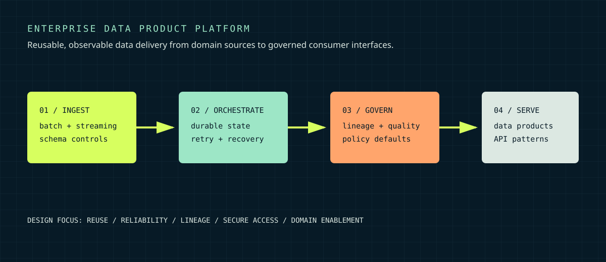

SENIOR SOFTWARE ENGINEER, CONTRACTOR / TECHMINDS GROUP
Building a durable delivery path for regulated data products.
A backend and orchestration focus: reusable ingestion patterns, reliable state management, governed quality controls, and integration surfaces that domain teams can depend on.

Fragmented pipeline patterns and one-off operational logic make it difficult to scale reliable delivery across teams while preserving governance and auditability.
Reusable batch and streaming ingestion, durable orchestration patterns, data-quality controls, lineage-aware governance, and documented data-product interfaces.
Idempotent operations, explicit recovery paths, observability, CI/CD quality gates, and platform conventions that reduce custom code in delivery teams.
A safer path from source systems to governed data products, designed for consistent operation and faster adoption by domain teams.